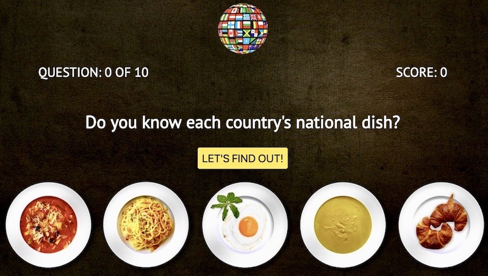
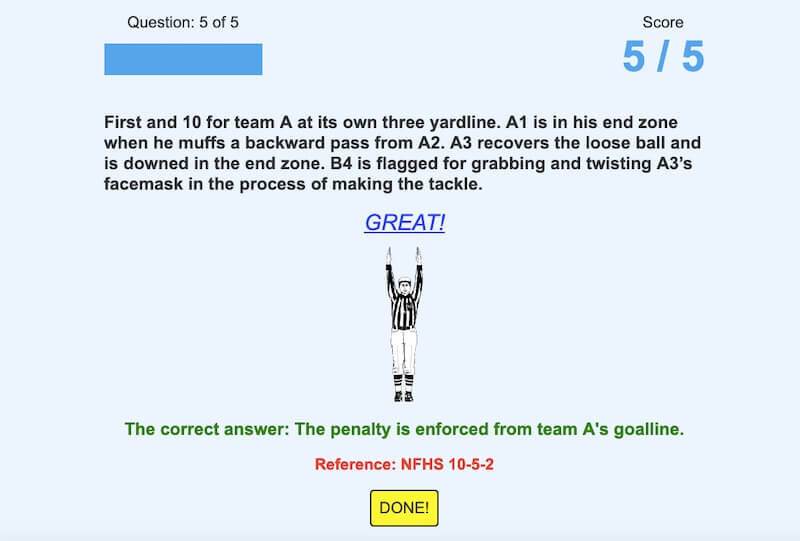

Football Rules Quiz
Football Rules Quiz is an app designed for football officials who wants to see how well they know the NFHS rules. Being knowledgeable of the rules of the game is fundamental to being a good football official and this app is a resource they can use to fine-tune their rules knowledge.